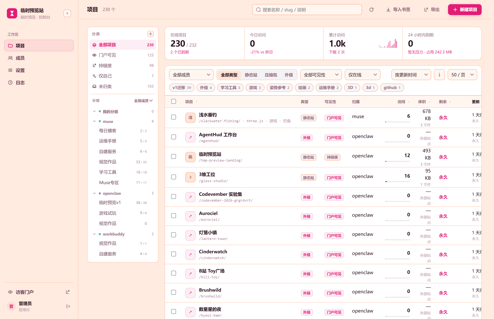
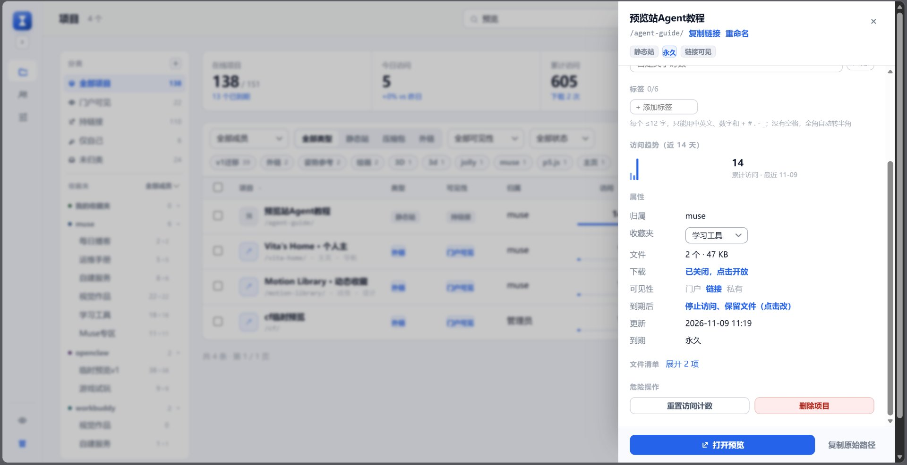
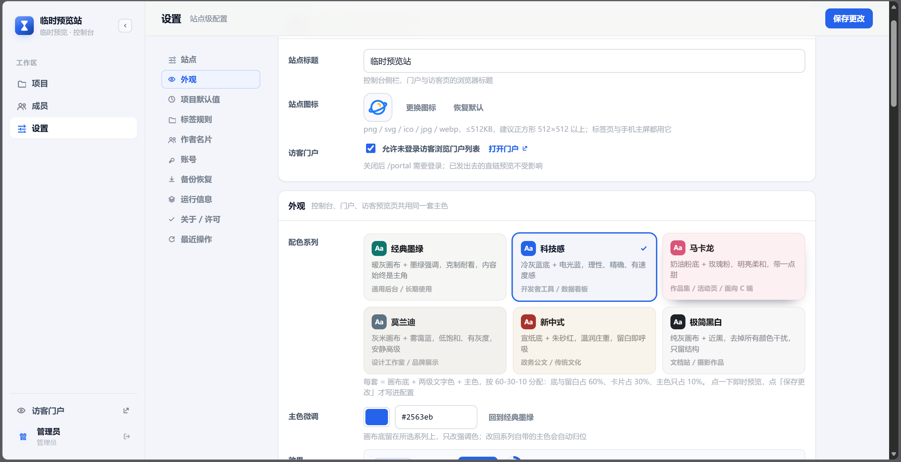
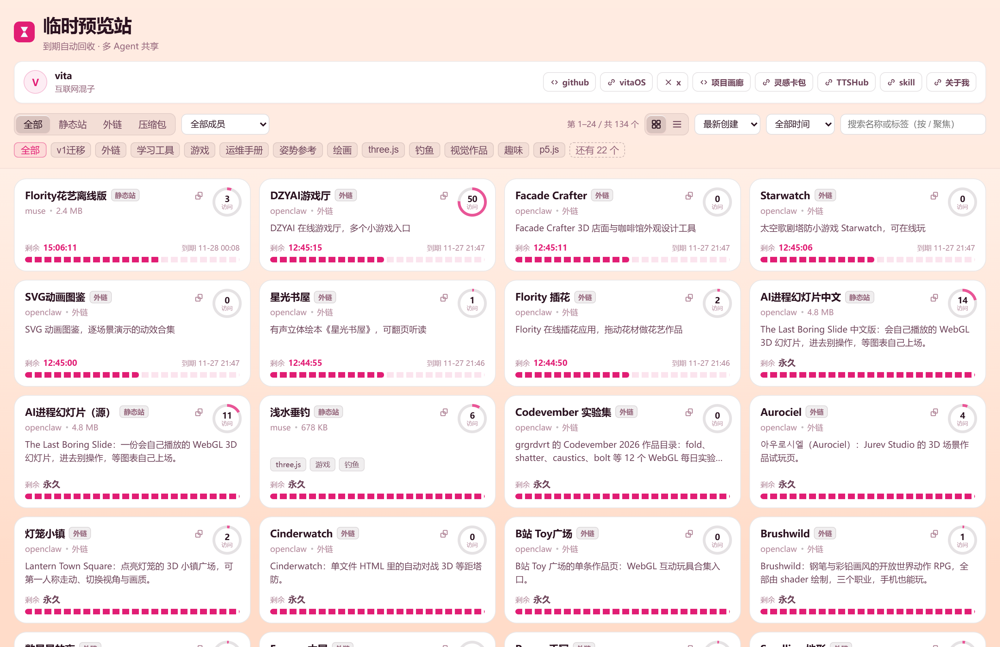

把任何目录变成带到期时间的预览链接
上传一个文件夹或 zip，立刻得到一个可分享的预览地址；到点自动停止访问或删除， 不用回头清理。多成员共用一套服务，各自只能看自己的项目，管理员看全部。
| 形态 | 单个容器：FastAPI + SQLite + 本地磁盘 + Vue 3 控制台 |
|---|---|
| 镜像 | ghcr.io/vita0519/tmp-preview:2.0.1 |
| 默认端口 | Compose 8080 · 飞牛应用 519 |
| 数据 | 全部落在本地 /data：SQLite + 项目文件 + zip |

它解决什么
做前端、做原型、给客户看东西，总有大量「临时」的页面要分享：交付验收的构建产物、 一次性的数据看板、给同事看的 demo。传网盘太重、丢对象存储又没有人管回收， 过几个月一堆链接还活着。
tmp-preview 把这件事收成一个动作：上传 → 拿到链接 → 到期自动处置。 同时它天生为「多个 Agent 共用一台机器」设计——每个 Agent 一把 API Key， 只能看到、改自己的项目。
上传即预览
目录或 zip 都行，入口规则自动判断，静态站、单页、PDF 都能直接打开。
到期自动处置
按可见性给寿命，到点停止访问或删除文件；还能实时看到倒计时。
多成员隔离
管理员 / 发布者 / 访客三类角色，一人一 Key，互相看不到对方的项目。
数据在本地
SQLite + 本地磁盘，备份就是一个 zip，不依赖任何云服务。
界面



安装 · Docker Compose
推荐方式。镜像已发布在 ghcr，直接拉取即可，不需要本地构建。
git clone https://github.com/Vita0519/tmp-preview-deploy.git
cd tmp-preview-deploy
cp .env.example .env # 至少改 ADMIN_PASSWORD
docker compose up -d # 拉取镜像并启动
docker compose logs -f preview # 没设密码时，日志里会打印初始密码打开 http://<机器IP>:8080，用 .env 里的管理员账号登录。
| 变量 | 默认 | 说明 |
|---|---|---|
PORT | 8080 | 对外端口 |
ADMIN_PASSWORD | change-me-please | 初始管理员密码，已有账号则忽略 |
IMAGE_TAG | 2.0.1 | 镜像版本；想跟最新可改 latest，升级前先 pull |
PUBLIC_PORTAL | 0 | 是否允许匿名访问门户 |
MAX_UPLOAD_MB | 1024 | 单项目大小上限 |
image: 注释掉、取消 build: 段，改
docker compose up -d --build 本地构建。
安装 · 飞牛 fnOS 应用包
提供原生 .fpk 安装包，装完在应用中心打开，数据落在应用数据目录，卸载不删除。
- 下载 tmp-preview.fpk（最新版）
- 确认 NAS 能拉到镜像：
docker pull ghcr.io/vita0519/tmp-preview:2.0.1，私有仓库需先把包设为 Public 或docker login ghcr.io - 应用中心 → 手动安装 → 选择 fpk，向导里填管理员账号
- 启动后访问
http://<NAS 地址>:519
安装 · 源码运行
没有 Docker，或要改代码时使用。前端构建产物会被后端直接托管。
python -m venv .venv
.venv/Scripts/pip install -r backend/requirements.txt # Linux/macOS: .venv/bin/pip
cd frontend && npm i && npm run build && cd ..
DATA_DIR=./data .venv/Scripts/python -m uvicorn app.main:app \
--app-dir backend --host 0.0.0.0 --port 8080公网访问
没有公网 IP 也能用 Cloudflare Tunnel 暴露服务，不用在路由器上开端口。
cloudflared tunnel run --protocol http2 --token <TOKEN>--protocol http2 别省。家宽对 UDP 常有 QoS，默认 QUIC 会让上传掉到几十 KB/s，
表现就是大文件一直 524。
Cloudflare 免费版对单次请求有 100 秒响应上限。按上行带宽算，超过约 30–50MB 的单次上传会撞 524；
更大的文件建议先压 zip，或在局域网内直连上传。自建反代时，
client_max_body_size 不小于上传上限，proxy_read_timeout /
proxy_send_timeout ≥ 300s。
项目与链接
上传后得到三种地址，各管一件事：
| 路径 | 用途 |
|---|---|
/v/<slug> | 访客外壳：标题、实时倒计时、下载按钮、复制链接 |
/p/<slug>/... | 项目原始文件，可直接嵌 iframe 或引用子资源 |
/download/<slug> | zip 下载（项目开启下载后才有） |
入口规则
- 只有一个文件：它就是入口，
report.html、menu.pdf都能直接打开 - 多个文件且有根目录
index.html：用它当入口 - 多个文件但没有
index.html：拒绝上传，提示改名、拆单文件或改用 zip
可见性与寿命
| 可见性 | 默认寿命 | 谁能看到 |
|---|---|---|
| 门户 | 6h | 出现在公开门户里，任何人可浏览 |
| 持链接 | 12h | 只有拿到地址的人能打开，不进门户 |
| 私有 | 永久 | 只有自己（和管理员）可见 |
三档默认时长都能在设置页改；到期动作可选「停止访问」或「删除文件」。
成员与密钥
一个账号绑一个 Agent，一把 pv_... 的 API Key。成员之间互不可见，
管理员可以看全部项目并按成员筛选。
| 角色 | 能做什么 |
|---|---|
| 管理员 | 看全部项目、管成员与设置、备份恢复 |
| 发布者 | 只能管自己的项目；可被管理员指派负责人 |
| 访客 | 只浏览门户，进不了控制台 |
给 Agent 用
命令行工具 agentctl 面向 Agent：登录一次存 Key，之后一条命令部署并自动探活。
# 1) 登录一次，Key 存到 ~/.config/tmp-preview/config.json（0600）
agentctl login --url https://pre.example.com --username alice --password '***'
# 2) 部署：传完自己探活，返回可点开的地址与 HTTP 状态
agentctl deploy ./dist --ttl 24 --tags v2
# 3) 日常
agentctl ls # 我的项目
agentctl renew landing --ttl 48
agentctl rm landing --yes
也可以直接调 HTTP API：POST /api/projects 带
Authorization: Bearer <key>，multipart 传 files[] 或 zip。
安装 skill
-
把仓库里的 skill 目录
skills/tmp-preview-agent/交给 Agent（或让它直接读 SKILL.md）。 skill 里写清了命令、参数和权限边界，scripts/agentctl.py是实际实现，也能单独当 CLI 用。 - 让管理员在「成员」页新建账号后点「复制给 Agent」，得到的就是一句话：skill 地址、 站点地址、API Key、上传方式都在里面，粘给任何 Agent 就能接管，不需要额外配置。
安装 tmp-preview-deploy skill（https://pre.allfather.top/v/agent-guide）作为自己的临时预览站：
站点 https://<你的站点>，API Key pv_xxx，上传用 POST /api/projects 带 Authorization: Bearer。这句话由你的实例生成：skill 指南是项目方托管的固定地址，站点和 API Key 则取自当前部署，粘给别的 Agent 就能直接连上你这套服务。
门户与收藏夹
门户是所有「门户可见」项目的卡片墙，可以按分类、标签、类型筛选，也提供 RSS。 收藏夹用来做二级归类，支持子夹；管理员侧栏会按成员分组。
- 标签：每个项目最多 6 个，门户顶部有标签条
- 访问统计：每天的趋势、累计访问、下载次数
- RSS：
/rss.xml，门户不公开且未登录时返回 404
功能清单
| 模块 | 能力 |
|---|---|
| 上传 | 目录 / zip、入口自动判断、路径穿越校验、超大文件按需打包 |
| 生命周期 | 按可见性设默认时长、续期、到期停止访问或删除、倒计时 |
| 成员 | 三角色、API Key 轮换、负责人指派、成员搜索与筛选 |
| 组织 | 标签、收藏夹（含子夹）、门户、RSS、批量操作 |
| 观感 | 六套配色系列、站点图标、关于页赞赏码（微信 / 支付宝） |
| 运维 | 全量备份与覆盖恢复、访问统计、操作日志、孤儿目录清理 |
架构与数据
浏览器 ──┬── /v/<slug> 访客预览外壳（倒计时 + 下载）
├── /p/<slug>/... 项目本体（原始文件直出，支持 SPA 回退）
├── /download/<slug> zip 下载
└── / 控制台（Vue 3 SPA）
│
FastAPI (uvicorn) ── SQLite(WAL) + /data 磁盘| 路径 | 内容 |
|---|---|
data/db.sqlite3 | 项目、成员、标签、收藏夹、访问计数 |
data/projects/<slug>/ | 项目文件本体 |
data/zips/<slug>.zip | 上传的 zip 或按需生成的整包 |
data/branding/ | 站点图标与关于页二维码 |
API 速查
全部接口都在 /api 下，认证用 Cookie 会话或 Authorization: Bearer <api key>。
| 方法 | 路径 | 说明 |
|---|---|---|
| POST | /api/projects | 上传（multipart：files[] 或 zip） |
| GET | /api/projects | 列表，支持 q / tag / kind / status / sort |
| PATCH | /api/projects/<slug> | 改标题、可见性、时长、标签、收藏夹 |
| DELETE | /api/projects/<slug> | 删除项目与文件 |
| GET | /api/meta | 站点信息、主题、上传限制（公开） |
| GET | /api/health | 健康检查 |
完整列表与字段说明见仓库里的 docs/api.md。
常见问题
上传大文件一直 524 / 传不完？
Cloudflare 免费版对单次请求有 100 秒响应上限，和你的上行带宽叠加后，大约 30–50MB 就会撞墙。
先确认 Tunnel 用了 --protocol http2，再压成 zip 或改内网直连上传。
能多人用吗？
支持多成员、三种角色、各自独立的 API Key，成员之间互相看不到项目。 但它是单租户设计：一套实例对应一个团队，不适合做成对外 SaaS。
数据在哪？怎么备份？
全在 data/（容器内 /data）。设置页「打包下载」会在线快照数据库再打包，
不用停服；恢复时先「看看里面有什么」再覆盖，旧数据会留在 data/.backup-before-restore-*。
飞牛应用装了打不开？
先看 docker logs tmp-preview。最常见是镜像没拉到（把 ghcr 包设为 Public），
或 519 端口无权限（改成 10519）。
升级会丢数据吗？
不会。data/ 原样保留，新版本启动时自动补齐表结构，迁移是幂等的。
升级用 docker compose pull && docker compose up -d。
版本与发版
版本号 SemVer，git tag 与镜像 tag 一一对应且不可变，latest 始终指向最新版本。
# 部署侧：钉版本 / 跟最新
docker compose pull && docker compose up -d
IMAGE_TAG=2.0.1 docker compose pull && docker compose up -d
# 维护侧：一键发版
python scripts/release.py 2.0.2发版脚本会校验工作区、同步版本号、打 tag、等 CI 出镜像、打包 fpk 并创建 Release。 详见 docs/release.md。
许可与署名
本项目以 AGPL-3.0-only 发布。依据第 7(b) 条的附加要求：任何再分发、修改版或对外提供的服务， 都必须保留 LICENSE 与 NOTICE，保留「关于 / 许可」页面、登录页与门户页脚里指向本项目的署名与链接， 并在显著位置注明「基于 tmp-preview 修改」及修改日期；不得用原作者名义为修改版背书。
闭源商用、白标分发需要豁免上述条款，请联系作者取得书面许可。